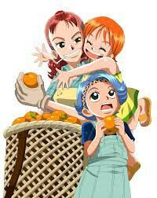

Etapas de Nami en One Piecce
🔹 Fase 1 — Infancia & Orígenes / Antes del sometimiento a Arlong Pirates

- Nami nació huérfana y fue adoptada junto con su hermana por Bell-mère, quien las crió en la aldea Cocoyasi Village.
- Desde niña desarrolló su pasión por la cartografía y la navegación, soñando con dibujar un mapa de todo el mundo.
- Su vida cambia drásticamente cuando la tripulación de Arlong invade su aldea, mata a Bell-mère y obliga a Nami a trabajar para ellos como cartógrafa, bajo amenaza, con la promesa de liberar la aldea si logra recaudar 100 millones berries.
- Durante estos años, su motivación principal era salvar su hogar — por lo que se ve obligada a robar tesoros o mapas para juntar ese dinero, adoptando el apodo de “Cat Burglar”.
🔹 Fase 2 — “Pre-Timeskip”: integración a la tripulación, confianza y rol de navegante
- Tras la derrota de Arlong, Nami se libera de su obligación y se une oficialmente a los Straw Hat Pirates como navegante.
- Su pasión por la navegación y cartografía se mantiene; empieza a dibujar mapas de islas, rutas marítimas y su sueño de trazar un mapa mundial sigue siendo su meta.
- En cuanto a personalidad: mantiene su obsesión por el dinero, pragmatismo, y astucia; pero también comienza a confiar en sus compañeros, formar lazos emocionales y defender su “nueva familia”.
- Su apariencia sigue siendo juvenil: cabello corto/nivel hombros, cuerpo esbelto — su estilo cambia varias veces con cada arco, pero mantiene un aire juvenil y sencillo.
🔹 Fase 3 — Post-Timeskip / Nueva etapa: crecimiento, nuevas habilidades y madurez
- Tras el “timeskip” de 2 años, Nami reaparece con cambios físicos notables: su cabello es más largo (llega hasta la cintura / espalda baja), su figura se ve más madura.
- Mejora sus habilidades: tras entrenar en la isla celeste Weatheria, perfecciona su arma (el Clima‑Tact), aprendiendo técnicas más avanzadas para manipular el clima — nubes, tormentas, electricidad (incluso con “Zeus”), lo que la convierte en una de las magas-clima más fuertes de la tripulación.
- A pesar de su crecimiento como navegante y luchadora, conserva su personalidad: sigue siendo astuta, un poco materialista (¿prefieres decir realista?), pero con un sentido de la lealtad muy fuerte al grupo.
- Su estilo visual y vestimenta cambia: bikini tops, jeans, atuendos más modernos y maduros — reflejando su evolución física, su confianza y su rol más activo en combates.
🔹 Fase 4 — Madurez, confianza, papel clave en la tripulación y crecimiento emocional / moral
- Nami crece emocionalmente: su pasado, sus traumas, sus pérdidas, sirven como motivación para proteger a quienes quiere — deja atrás su pasado traumático con más serenidad.
- Su rol dentro de la tripulación deja de ser “solo navegante / cartógrafa” — ahora también aporta en estrategia, decisiones, información, liderazgo en momentos críticos, y su voz tiene peso.
- Sigue persiguiendo su sueño personal: dibujar el mapa del mundo. Pero ya no sola: con compañeros, apoyada, con más recursos y convicciones.
- Su estilo, actitud y habilidades reflejan una mezcla de su pasado, su crecimiento y su evolución: más segura, madura, versátil.